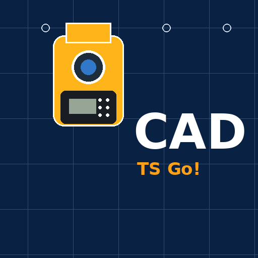
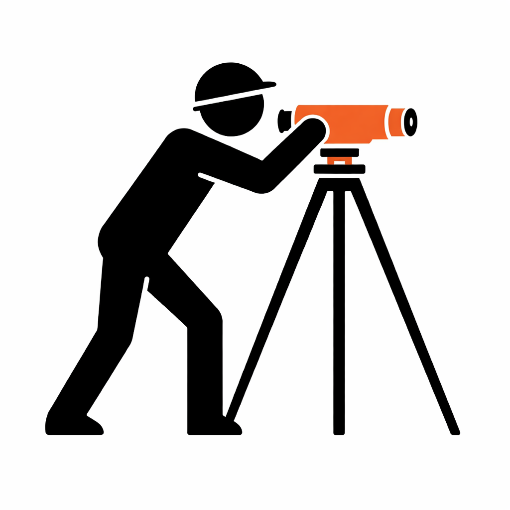

现场应用
面向测量和施工现场的 Android 应用：全站仪、水准仪、项目文件、放样、测点采集、施工控制、高程和现场计算。

全站仪、项目、DXF、放样、点位测量和现场控制。

水准点、标尺读数、仪器视线高、高程、放样标高和水准测量。
产品
目标很简单：在施工现场快速得到明确结果——测点、设计线、偏距、高程、标尺读数、设计标高和放样结果。
用于全站仪与现场项目协同工作的应用。连接仪器，打开 DXF 放样文件，选择设计线、点或对象，测量点位并检查其相对项目的位置。
用于施工现场光学水准测量的应用：水准点、标尺读数、仪器视线高、高程、标高放样和高程测量。
文件
GeoSystems Studio 应用的使用条款、付款、访问权限和数据处理说明。